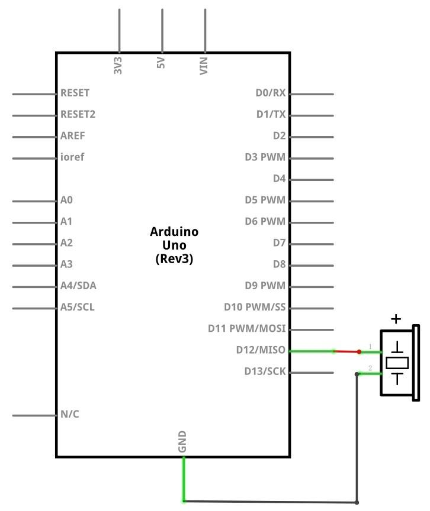
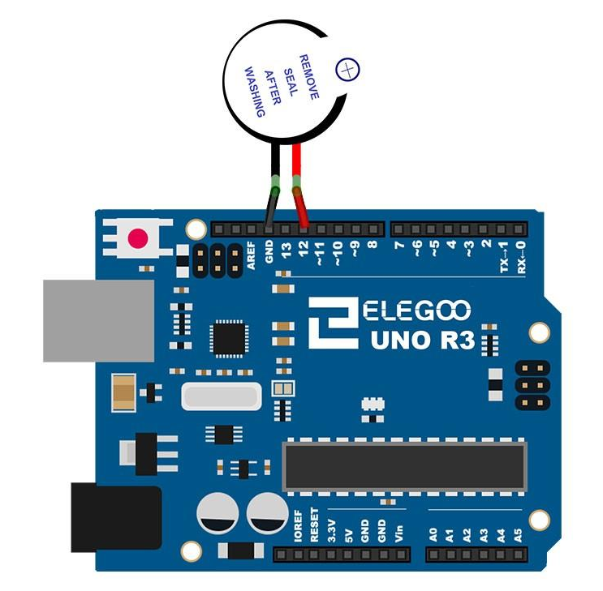
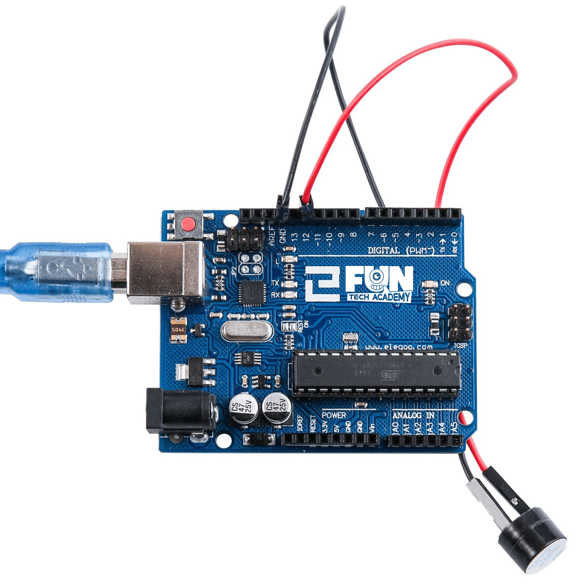
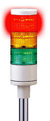

En este tema, aprenderemos a generar un sonido con un zumbador activo.
(1) x Placa Arduino
(1) x Zumbador
(2) x F M cables (cables de hembra a macho)
Los zumbadores electrónicos son componentes alimentados por CC (corriente continua). Suelen ser equipados en
los circuitos integrados de las fotocopiadoras, alarmas, juguetes electrónicos, teléfonos y otros productos
electrónicos para dispositivos de voz.
Estos componentes emiten un pitido cuando son activados y al tener la placa de arduino podemos configurar en
que momento harán el pitido.


Si tenemos todo el cableado bien, deberíamos tener algo como en la imagen, de no ser así debemos revisar los apartados anteriores.

Una vez efectuado todo el cableado, descargaremos el script del siguiente link y lo cargaremos como hemos aprendido.
En este caso, hemos empleado una nueva sentencia de control:
while (condición)
{
// Sentencias
}
La condición debe ser una expresión booleana que se evalúa como true o false. Un ciclo While
se repetirá de forma continua e infinita hasta que la expresión entre paréntesis () se vuelva
falsa.
Algo debe cambiar la variable de la condición, o el ciclo while nunca saldrá. Esto podría estar en el código,
como una variable incrementada, o una condición externa, como probar un sensor.
Ya sabemos activar con distintas frecuencias el zumbador.
Como reto, tendremos que activar el zumbador con tres frecuencias distintas y cada frecuencia que encienda un
LED de cada color para saber cuando cambiamos de una frecuencia a otra.
